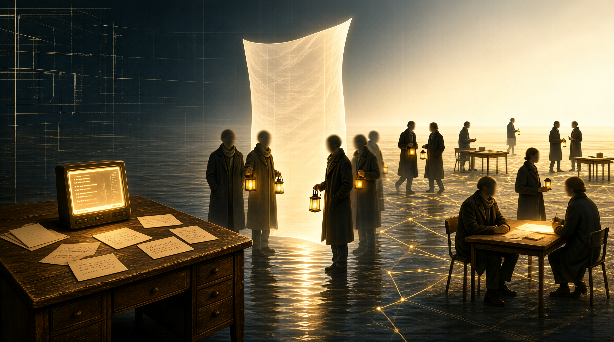

ONE · 旧时光
开源世界的旧时光
THE COMMONS BEFORE IT WAS CLAIMED
"Governments, of both the old world and the new, come to me and speak of sovereignty as though it were something more than your ability to enforce a position on the people inside your borders."
— John Perry Barlow
A Declaration of the Independence of Cyberspace, 1996
quoted in Code is Law by Lawrence Lessig
A Declaration of the Independence of Cyberspace, 1996
quoted in Code is Law by Lawrence Lessig
01
当时不受外界关注——几乎每一个参与者都是冲着解决问题来的
02
不问来自哪里？不问多大了？不问什么公司？
03
"以为是幻觉"——因为那个空间里没有墙，只有灯

// COMMONS.2001
NO WALLS · NO BORDERS · NO FLAGS